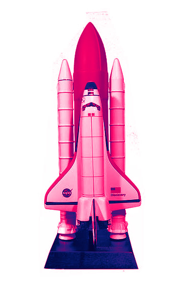
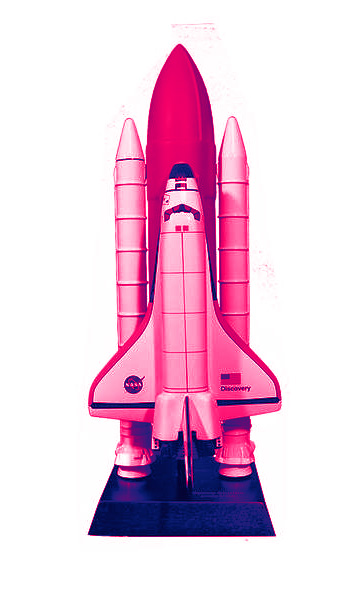
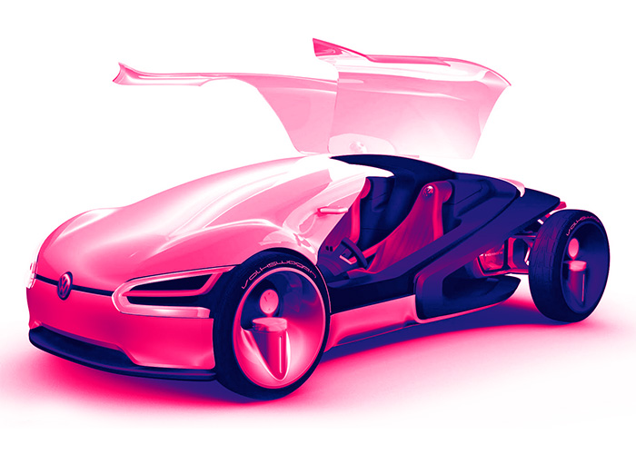
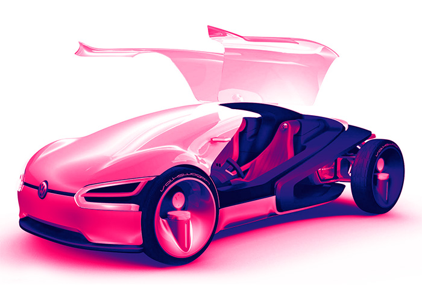

Humans for
the Future
Human for the future is a broad topic that can cover
many aspects of our existence, as our challenges,
our potential, and our evolution.
Human for the future is a broad topic that can cover
many aspects of our existence, as our challenges,
our potential, and our evolution.
In human-robot collaboration, the robot assists the
human operator. This means: The machine does not
replace the human, but complements his capabilities and
relieves
him of arduous tasks. These can include
overhead work, for example, or the lifting of heavy loads.
Autonomous, collaborative robots are also used to
supply
production workstations


 



Maximum flexibility in production. Relief of employees by
performing ergonomically unfavorable work steps that
could not
previously be automated
Robotization will eventually
transform the nature of
doing business and
economics in general.
The robotics engineering
field falls under the categories
of electrical, mechanical,
and computer engineering.
An industrial robot is a
robot system used for
manufacturing.They are
automated, programmable.


We need to know what the resources of the moon are. We have great
evidence now because of different kinds of radar and spectroscopic
analysis that people have been able to do. But we really do need to go
visit there, and we can do that with a robot craft without any
problem.
 

I like futuristic designs a lot. I chose some of
the most impressive concept car designs that I
could find. Some of them are actually real and
some of them are just that, nothing more than
a design. You will also find two futuristic bikes.
Hope you like the designs.

How many want to subject themselves to
black lung disease and a host of other health
problems from that job?
This is why coal
mining towns are dying out. Young people in
these towns are moving on to the brighter
job prospects.
And technology is taking over
what’s left of the mining industry. Green
energy is taking over, and with it, a host of
new, clean jobs and careers.
It’s the march of
civilization that will never cease.
Robots and AI will certainly replace jobs – boring,
dangerous, and dirty ones mostly. Consider coal
mining for example. How many people still want to
go down into a mineshaft and dig out coal?


Robotics is an interdisciplinary
field that involves the design,
construction, and use of robots.
Sample text. That discusses the role of robots
in human future development.